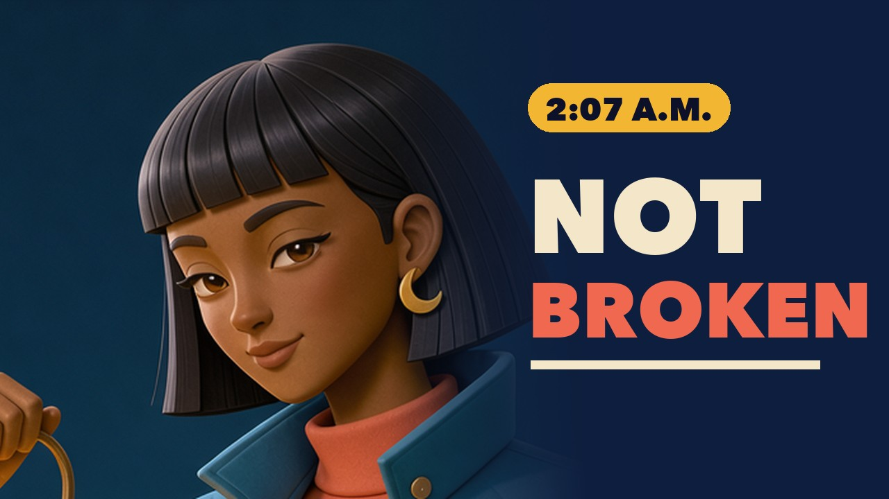
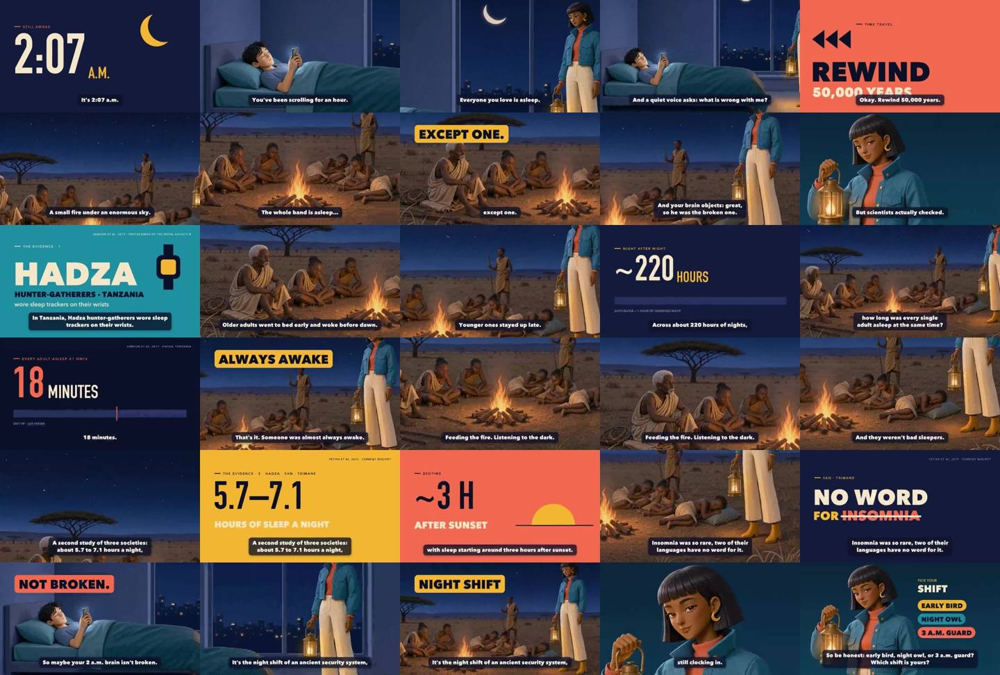
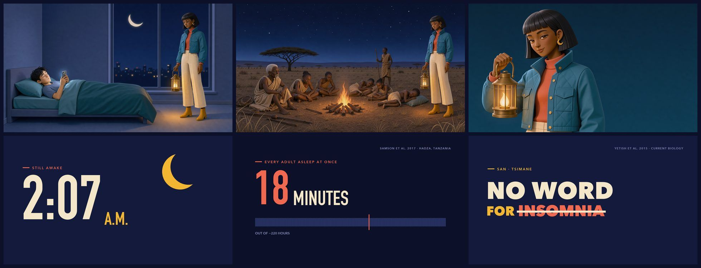
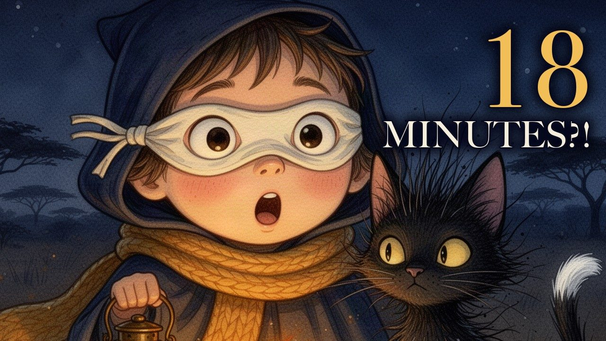
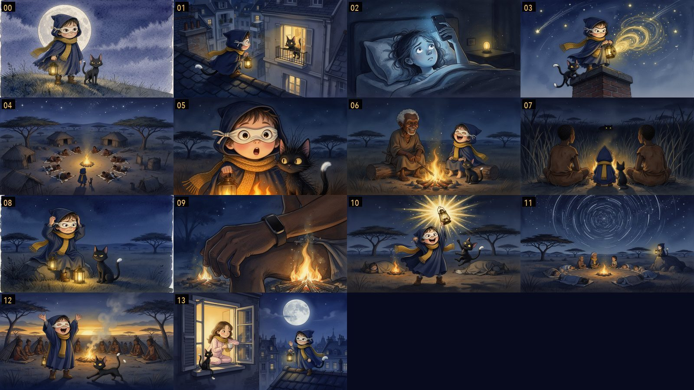
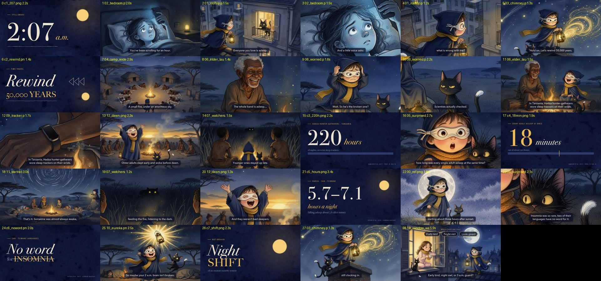
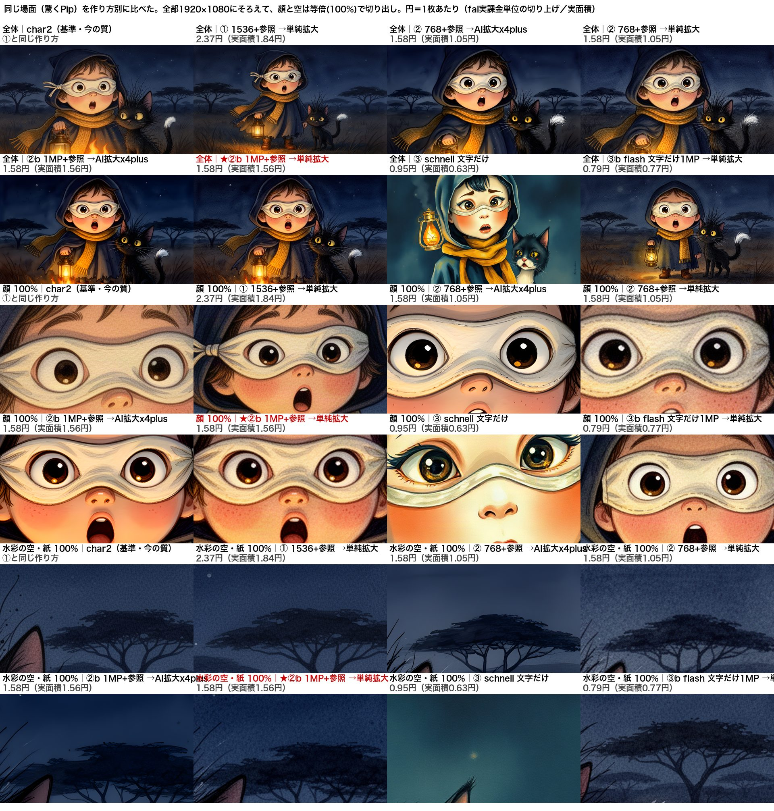

2026-10-10 ／ たまごさんの依頼「@Inkexplainer96 以上の質が出せるか」
棒人間解説チャンネル Ink Explainer を超えられるか：分析と試作1本
結論：今の作り方（Python作画・3色）では、まだ超えられない。採点は本家 39点／試作 30点（50点満点）。
差は「絵の色と量」と「テンポ」。題材と台本の組み立ては同じ型を再現できた。超えるには下の条件5つが要る。
この1本の費用（10/10 12:40 検証済み・9章）：Opus 5.5＝週の枠 約0.08%・5時間枠 約0.25%（API換算481円相当・定額内なので追加請求0円）／外部API＝3.69円（Gemini 音声1回・公式単価で計算）。画像の有料APIは0円。
追記 10/10 16:50：キャラクター版を作りました → 10章
同じ題材を「立体感のあるおしゃれなキャラ1人」で約60秒。採点は 棒人間版 30点 → キャラ版 33点（本家 39点）。デザインセンスの採点は 棒人間版 17点 → キャラ版 28点（40点満点）。外部API 約23円（上限100円・目標50円の内）、Claude 週の枠 約0.08%。
追記 10/10 21:50：キャラ版 v2「絵本トーン」を作りました → 11章
絵を3枚→14枚（同じ絵は最大2回）、主役の表情7種類。採点 キャラ版 33点 → v2 36点（本家 39点）、デザインセンス 28点 → 32点。外部API 約27円（絵1枚 約1.7円・前回 約6.6円）、Claude 週の枠 約0.09%。
追記 10/11：絵を安くする比較と8分の見積りをしました → 12章
今の質（v2）のまま、絵1枚 2.37円 → 1.58円（約3分の2）にできる。8分（絵60枚・撮り直し込み）で 約96円。8分の動画はまだ作っていない（Genspark の脚本待ち）。外部API 7.28円、Claude 週の枠 約0.05%。
1. 試作（Opus 5.5 が作った77秒）
題名「Why Ancient Humans Needed Night Owls」／英語・77秒・31カット・212語。絵は全部 Python（PIL）で手描き風に作画、文字は絵に焼き込まず別の層で重ねた。色は How It Holds の3色（赤・紙・インク）。ナレーションは Gemini TTS（声 Charon）。公開用に 960×540・0.91MB に圧縮。フル画質（1920×1080・52MB）は Google ドライブ「InkExplainer比較」フォルダ。
事実の出典：Samson ほか 2017（Proc. R. Soc. B・ハッザ族の睡眠計測、220時間で全員が同時に寝ていたのは18分）／Yetish ほか 2015（Current Biology・3つの狩猟採集社会の睡眠5.7〜7.1時間）。
2. 本家の同じ長さ（再生数1位の冒頭0:00〜1:17）
「What Did Ancient Humans Actually Do All Day?」1,200万回（2026-08-21公開）
3. 採点（10点満点・辛口）
| 項目 | 本家 | 試作 | 理由 |
|---|---|---|---|
| 掴み | 9 | 7 | 本家は「今朝、機械があなたに叫んだ」→5万年前→「あなたの脳はもう反論している」までが28秒で完璧。試作も同じ型（深夜2時のスマホ→巻き戻し→反論の先回り）だが、最初の絵（ベッドの人物）が小さくて弱い。 |
| 分かりやすさ | 8 | 7 | 試作は「18分」という1つの数字に集約できていて筋は明快。ただ、手首の計測器の絵が丸太に見える、右の吹き出しが空のまま、など絵が言葉を助けていない所がある。 |
| 絵 | 7 | 5 | 本家は色つきの背景・毛皮・小物で1枚ごとに「場所」がある（作画はAI画像生成とみられる・未確認）。試作は灰色の夜が続き、人物が小さい。最後の問いかけの直前に約1秒、真っ白な画面がある（明確な不具合）。 |
| 音 | 6 | 5 | 試作の声は落ち着いて聞きやすいが話速170語/分（本家210〜225語/分）で遅い。環境音は合成ノイズで薄く、音楽なし。※両方とも耳での確認は未確認、数値と作り方からの採点。 |
| テンポ | 9 | 6 | 本家は90秒で絵が46回変わる（約2秒に1枚）。試作は77秒で31カット（約2.5秒に1枚）＋話が遅い。 |
| 合計 | 39 | 30 |
4. チャンネルの数字（全17本・2026-10-10 取得）
登録者12.2万人。RSSで日付が分かる最古は2026-05-07（それより古い2本は日付未確認）＝始まって約5か月。全再生1,946万回のうち62%が1本（1,200万回）。中央値は約30万回。つまり「毎回めちゃくちゃ伸びる」のではなく、1本の大当たりがチャンネルを持ち上げている。
取得：Mac の yt-dlp（一覧のみ・ダウンロードなし）と公式RSS。字幕は上位3本を取得（4・5位は YouTube の回数制限 429 で取れず＝未確認）。
5. なぜ伸びているか（分解）
- 題材：上位6本のうち5本が「古代人は◯◯のとき何をしていた？」。専門知識ゼロで誰でも気になる疑問に、今の自分の生活（仕事・時間・雨の日・お酒）との比較をくっつけている。1位の「一日中何してた？」は「仕事に時間を取られている自分」に刺さる。
- 冒頭の掴み：必ず「あなた」で始まる。1位＝「今朝、機械があなたに叫んだ」、2位＝「2日食べていないあなたを想像して」。0:12で「5万年巻き戻す」、0:28で「あなたの脳はもう反論している」と視聴者の反論を先に言う、0:45〜1:00で疑問を3つ重ね、1:40で「どっちがどっち？」とクイズを出す。
- テンポ：冒頭90秒で絵が46回変わる＝約2秒に1枚。話速は 191〜225語/分（速い）。1文に1枚、文の名詞をそのまま絵にする（目覚まし→机の男→「REWIND 50,000 YEARS」の文字カード→焚き火→骨→洗濯機→YOU｜HIM）。
- 絵：丸い頭の棒人間＋色つきの平塗り背景。顔は目と眉だけで感情が分かる。うまい絵ではないが、「1文に1枚、意味が一瞬で分かる」ことに徹している。サムネは大きな顔1つ＋黄色の大文字2〜3語（NO JOBS／RAINED ALL WEEK）。
- ナレーションと長さ：短い文だけ、つなぎ言葉なし。6〜15分、1位は11分で8章立て。概要欄に論文名とDOIを並べ「全部出典つき」をうたう＝信用。
6. これ以上の質を出すための条件5つ
- 題材は「誰でも持つ素朴な疑問 × あなたの今の生活」で選ぶ。論文で裏が取れて、数字1つで「えっ」となるもの（今回の「18分」）。
- 最初の30秒の型を守る：あなたの不満 → 5万年前 → 反論の先回り → 疑問を重ねる。ここは試作でも再現できた。
- 2秒に1枚・話速200語/分以上。試作は2.5秒・170語で負けた。カット数を40以上に、音声は速めに作る。
- 絵に色と「場所」を足す。3色の線画だけでは本家の色つき背景に勝てない。背景だけ色の平塗りを足す、人物を画面の1/3以上の大きさにする、空白の画面を作らない（自動検品で真っ白なフレームを落とす）。
- 音を作り込み、出典で信用を取る。低い音楽＋効果音を手で設計し、概要欄に論文名を並べる。本家の勝ち筋（出典つき）はそのまま真似し、その上で字幕（本家は焼き込み字幕なし）とカメラの動きで上回る。
7. 使ったクレジットとお金（記録）
| 作った子 | Opus 5.5（claude-opus-5-5）を claude CLI で1本起動（Mac の工場の起動口 2.1.278 は Opus 5.5 非対応だったため、手元にあった 2.1.296 本体を指定して起動。工場側の設定は変えていない） |
| 走った時間 | 04:51〜06:02（約71分）。うち作画の書き出しが約50分（Mac が他の仕事で混んでいた） |
| トークン | 出力 69,628／キャッシュ読み 2,377,280／キャッシュ書き 109,524／入力 66（33往復）。API換算 $2.74（約434円・定額プランなので実際の請求は0円）。※最初の起動は話の速さを直すため6分で止め直した（出力843トークン、ほぼ無視できる） |
| 週の枠 | （初回の推定 0.04%→9章で 0.08% に訂正）工場の実測で「週1% ≒ 重みつき2,000万トークン」（10/7〜10/9 の6回の実測で 1,965万〜2,180万）。この子は重みつき約78万 |
| 5時間枠 | （初回の推定 0.13%→9章で 0.25% に訂正）同じく「5時間枠1% ≒ 485万〜678万」から計算 |
| /usage の％ | 未確認。Claude アプリの使用率記録が 10/9 05:39（週39%）で止まっていて、前後の実測が取れなかった。pace.json は前後とも 39%（同じ古い値） |
| 外部API | Gemini TTS（gemini-3.8-flash-tts）1回＝3.69円（入力413・音声出力2,569トークン×公式単価・9章。初回の4.1円は仮の単価で計算していた）。お金台帳 status/okane/kakin.json の api_shuho に記録。画像生成0円 |
作り方の記録：台本・字幕・作画コードは工場の status/ink/proto/（公開しない場所）。
8. 生データ（実測）
上の％と円は、すべて以下の実測から計算した。
全17本の再生合計 19,464,000 ／ 1位 12,000,000 → 61.7%（yt-dlp --flat-playlist の view_count・2026-10-10 04:07取得） pace.json allPct: 前 39% (04:14記録) ／ 後 39% (06:24記録) ※どちらも 10-09 05:39 の同じ古い値 採点合計: 本家 9+8+7+6+9 = 39 ／ 試作 7+7+5+5+6 = 30 冒頭90秒の画面切り替え（ffmpeg scene>0.3）: 46回 話速: 49_Ph2q6uIM 2516語/671秒=225語/分, SD7XyG2wd1k 2413語/696秒=208語/分, OCr6NteWSQ8 1537語/484秒=191語/分（自動字幕から） 試作: 212語/76.9秒, 31カット, proto_web.mp4 910,013バイト(960x540 H.264 + HE-AAC)
calibration（status/quota-state.json の15分バケツ × Claudeアプリ plan-usage-history の実測%） 時刻 週%(sd) リセット以降の重みつきトークン 1%あたり 2026-10-07 06:30 9 176.8M 19.65M 2026-10-07 11:03 12 261.6M 21.80M 2026-10-08 07:31 24 512.4M 21.35M 2026-10-08 13:18 27 555.1M 20.56M 2026-10-08 18:58 32 642.7M 20.09M 2026-10-09 05:39 39 773.1M 19.82M 5時間枠: 10-08 13:18 fh=8 直近5h 38.8M(4.85M/1%) ／ 10-08 18:58 fh=12 直近5h 81.4M(6.78M/1%) 重み: input 1.0 / cache_creation 1.25 / cache_read 0.1 / output 5.0（tools/quota_estimate.py と同じ）
子2本の重みつき合計 = 779,740 週の枠 = 779,740 ÷ 20.3M = 3.841% （1%あたり19.65M〜21.80Mの幅で 3.577〜3.968%） 5時間枠 = 779,740 ÷ 5.8M = 13.444% （幅 11.501〜16.077%） claude -p の結果JSON（本番の子 64ac2de9）: total_cost_usd = 2.744472
Opus 5.5 の子の会話ログ（~/.claude/projects の usage を集計）
{
"2f86d951-c10f-4b7b-9edb-9db6e21f6aac": {
"msgs": 4,
"tokens": {
"input_tokens": 8,
"cache_creation_input_tokens": 31631,
"cache_read_input_tokens": 131394,
"output_tokens": 843
},
"weighted": 56901.15,
"first": "2026-10-09T19:39:48.361Z",
"last": "2026-10-09T19:41:19.262Z"
},
"64ac2de9-3b3a-43af-ba49-cbd5cff93678": {
"msgs": 33,
"tokens": {
"input_tokens": 66,
"cache_creation_input_tokens": 109524,
"cache_read_input_tokens": 2377280,
"output_tokens": 69628
},
"weighted": 722839.0,
"first": "2026-10-09T19:51:53.557Z",
"last": "2026-10-09T21:02:29.034Z"
}
}
Gemini TTS の記録（status/ink/proto/cost_log.jsonl）
{"at": "2026-10-10T05:00:07", "model": "gemini-3.8-flash-tts", "input_tokens": 413, "output_tokens": 2569, "usd": 0.025896, "yen": 4.098}
9. 検証（10/10 12:40・推定を実数に置き換え）
1本あたり：外部API 3.69円（公式単価×実数で計算・確定。無料枠なら0円）／Claude 週枠 約0.08%（5時間枠 約0.25%）
API料金に換算すると Opus 5.5 は約481円相当。ただし定額のMaxプランの中なので、追加の請求は0円。前の「週0.04%」はトークン量だけで数えた値で、Opus の単価がSonnetの2倍なのを入れていなかったので、多めの0.08%に直した。
Gemini 公式単価（ai.google.dev/gemini-api/docs/pricing・2026-10-10 12:27 取得） gemini-3.8-flash-tts Standard: 無料枠=無料 ／ 有料枠 入力 $0.50/1M・音声出力 $9.00/1M（2026-12-31まで。2027-01-01から $1.00 / $18.00） 今回の実数（APIの usageMetadata）: 入力 413 ・ 音声出力 2,569（= 102.9秒 × 25トークン/秒） 413×0.50/1M + 2569×9.00/1M = $0.023328 × 158.23円 = 3.69円（2027年以降の単価なら 7.4円） 呼んだ外部APIの全部（Opus 5.5 の子の道具呼び出し36件を全件確認）: generativelanguage.googleapis.com /v1beta/models（モデル一覧・無料） 1回 generativelanguage.googleapis.com …/gemini-3.8-flash-tts:generateContent 1回（cost_log.jsonl も1行） それ以外の外部API・有料サービスの呼び出し 0件 Google の実際の請求額: 未確認（請求画面はログインが要る）。カード台帳 kakin.json に Google Cloud の引き落としは過去に1件も無い Claude 公式単価（platform.claude.com/docs/en/about-claude/pricing・2026-10-10 12:35 取得） Opus 5.5: 入力 $4 ／ キャッシュ書き(1時間) $8 ／ キャッシュ読み $0.20 ／ 出力 $20（各1Mあたり） 本番の子 64ac2de9: 66×4 + 109,524×8 + 2,377,280×0.2 + 69,628×20 (/1M) = $2.7445（CLIの total_cost_usd 2.744472 と一致） 止めた子 2f86d951: 8×4 + 31,631×8 + 131,394×0.2 + 843×20 (/1M) = $0.2962 合計 $3.0407 × 158.23 = 481円相当（定額のMaxプラン内なので、実際の追加請求は0円） 使用率の実測が止まっていた原因（~/Library/Logs/Claude/main.log） [plan-usage] config: poll requires tray open within 86400000ms [plan-usage] background poll paused: tray not opened recently → Claudeアプリは「メニューバーのClaudeを24時間以内に開いたとき」しか使用率を取りに行かない。10/10 10:10 のアプリ再起動で1回だけ取れた 最新の実測: 2026-10-10 10:11 週 59% ／ 5時間 8%（その前 2026-10-09 05:39 週 39%） 目盛り: 週1% = 重みつき 19.05M（10/10 10:11 の実測で再計算）≒ Sonnet換算 $38.1 ／ 5時間1% = 6.1M ≒ $12.2 この1本: トークン量で 0.041% ／ 金額（Opus は Sonnet の2倍の単価）で 0.080% → 多めの 0.08% を採用。5時間枠は 0.25%
10. キャラクター版（Opus 5.5・10/10 15:49〜16:48）
同じ題名「Why Ancient Humans Needed Night Owls」／英語・59.5秒・30カット・197語（約199語/分）。主役はオリジナルの案内役「The Night Watcher」（黒髪ボブ＋前髪・青緑のキルトの短いジャケット・珊瑚色のタートル・生成りのワイドパンツ・からし色のブーツ・真鍮のランタン）。手本の広告から借りたのは「つや消しの立体感・等身・色の強さ」だけで、白い髪・丸メガネ・ヘッドセット・オレンジの服・紫の背景＋UIカードは使っていない。公開用 960×540・0.97MB。元の画質（1920×1080・26.5MB）：/Users/mac/Documents/AI作業/2026-10-10_キャラ版_NightOwls_1080p.mp4

作り方（安く・同じキャラを保つ）
- 絵は3枚だけ。1枚目（寝室・全身）を文字から作り、2枚目（夜のキャンプ）と3枚目（上半身）は1枚目を参照画像として渡して作った＝顔・髪・服・ランタンが3枚とも一致。動きは全部カメラ（寄り・引き・パン）と切り抜きの違いで出した。
- 残りの8枚は Opus が PIL で作った文字のカード（2:07 A.M.／REWIND 50,000 YEARS／HADZA／220 HOURS／18 MINUTES／5.7–7.1／〜3 H AFTER SUNSET／NO WORD FOR INSOMNIA）。文字は絵に焼き込まず別の層で重ねた。
- 途中の変更：最初に予定した Gemini の画像モデル（1枚約5.3円）は、この鍵が無料枠のため画像は使えなかった（429「上限0」・請求なし）。子を止めて fal.ai の Flux 3（1枚約4〜8円）に切り替え、同じ会話の続きから再開させた。

全30カット（各カットの真ん中のコマ・公開用MP4から切り出し）。

採点①：前と同じ5項目（10点満点・辛口）
| 項目 | 本家 | 棒人間版 | キャラ版 | 理由（キャラ版） |
|---|---|---|---|---|
| 掴み | 9 | 7 | 7 | 「2:07 A.M.」の大きな数字→寝室、で一瞬で状況が分かる。ただし布団の人物が目を閉じたままスマホを持っている（眠っているように見える）ので「眠れない」が絵で伝わらない。 |
| 分かりやすさ | 8 | 7 | 7 | 数字カードで要点は明快。だが字幕がカードの文字と同じことを二重に言う所が多い。「18 MINUTES」の帯の赤い印は実際の時刻ではなく飾り（誤解のもと）。 |
| 絵 | 7 | 5 | 7 | 仕上がりは別物に上がった。ただしキャンプの1枚を14回使い回していて、後半は同じ絵の切り抜きが続く。主役が首から下だけしか映らないカットが6〜7つある。元絵が1360×768なので寄ると眠い。 |
| 音 | 6 | 5 | 5 | 声は同じ Gemini。199語/分に上がったが、1.22倍に速めて作ったので少し急いで聞こえる可能性。環境音は合成。※耳での確認は未確認（数値からの採点）。 |
| テンポ | 9 | 6 | 7 | 59.5秒で30カット＝約2.0秒に1枚で本家と同じ速さ。ただ同じ絵が続くので「変わった感」は本家より弱い。0.8〜1秒の短すぎるカットもある。 |
| 合計 | 39 | 30 | 33 |
採点②：Opus のデザインセンス（10点満点×4・辛口）
| 項目 | 棒人間版 | キャラ版 | 理由 |
|---|---|---|---|
| 構図 | 4 | 6 | 寝室の1枚目は余白が広く、窓の月・ランタンの灯りで画面の左右に役割がある＝良い。だが動画にしたとき、カメラの切り抜きで主役の顔が外れ、脚だけ・空だけのカットが出た（Opus は1枚絵の構図は作れるが、切り抜きの構図の検品が甘い）。文字カードの「REWIND」は字幕が「50,000 YEARS」に重なっている。 |
| 色 | 5 | 8 | 藍・青緑・珊瑚・からしの4色を、絵とカードの両方で通した。カードの地色を藍→珊瑚→青緑→からしと切り替えて章の区切りにしたのは上手い。減点は「5.7–7.1」のカードで生成りの文字がからし色の地に溶けて読めないこと。 |
| 文字組み | 5 | 7 | 細い小見出し（— THE EVIDENCE · 1）＋太い数字＋右上の小さな出典、という雑誌の型を全カードで守れている。数字は細長い書体、言葉は太い書体と使い分けも正しい。減点は字幕の箱が全カットで同じ大きさ・同じ位置で、カードの文字と重複して画面がうるさくなる所。 |
| キャラの魅力 | 3 | 7 | 顔・髪・服・ランタンが3枚とも一致し、「1人の主役がいる番組」になった。上半身の絵の表情（少し笑って何か知っている顔）は良い。ただし主役が何もしていない（立って見ているだけ）。指さしや驚きなど、話に合わせた演技の絵が無いので、案内役というより飾りに近い。 |
| 合計（40点） | 17 | 28 |
辛口のまとめ：Opus のセンスは「色と文字のカード」で一番よく出た（ここは本家より上）。弱いのは「同じ絵をどう切るか」と「主役に演技をさせる」こと。次に上げるなら、①絵を3枚→5枚にして主役の演技（驚く・ランタンを掲げる・焚き火の横に座る）を足す（約+16円）、②切り抜きごとに主役の顔が入っているかを機械で検品する、③字幕とカードの文字の重複を消す、の3つ。
使ったクレジットとお金（キャラ版・確定値と計算の根拠）
| 外部API 合計 | 約23円（22.8円）＝ fal 画像3枚 19.8円 ＋ Gemini 声1回 3.0円。上限100円・目標50円の内。使う前の見積りは「3枚（最大4枚）で約20円、最大26円」 |
| 画像（fal.ai Flux 3） | 公式単価 $0.024／メガピクセル（fal の価格API で 16:50 に確認：text-to-image・edit-image とも同じ）。出てきた絵は3枚とも 1360×768＝1.04MP。1枚目（文字から）$0.025、2・3枚目（参照画像つき）は参照の1.04MPも課金される前提で各 $0.050 → 合計 $0.125 × 158.23円 ＝ 19.8円（参照が課金されなければ 11.9円）。工場の記録 cost_log.jsonl には多めに1回 $0.05 で 23.7円と記録。fal の実際の請求額は未確認（使用量APIはこの鍵では権限なし） |
| 声（Gemini TTS） | gemini-3.8-flash-tts 1回：入力305・音声出力2,092トークン × 公式単価 ＝ 3.0円。ただし今回、この Gemini の鍵は無料枠だと分かった（画像が「無料枠の上限0」で断られた）ので、声の実際の請求は0円の見込み（前回の3.69円も同じ） |
| Gemini 画像 | 1回試して 429（無料枠の上限0）＝請求なし 0円 |
| Claude（Opus 5.5） | 週の枠 約0.08%・5時間枠 約0.25%（前回と同じ計算方法）。会話ログの実数：出力55,368／キャッシュ読み4,542,271／キャッシュ書き125,002／入力104（53往復・止めて再開した分も含む）。API換算 $3.02（約477円相当・定額のMaxプラン内なので追加請求0円）。目盛りは「週1% ≒ Sonnet換算 $38.1」「5時間1% ≒ $12.2」（10/10 10:11 の実測から）で、$3.02 ÷ 38.1 ＝ 0.079%、÷ 12.2 ＝ 0.25% |
| /usage の％そのもの | 未確認。Claude アプリの使用率記録が 10/10 10:11（週59%）のまま更新されていない（メニューバーの Claude を開いた時しか取りに行かない仕様・9章） |
| 走った時間 | 15:49 起動 → 16:05 Gemini 画像が使えないと判明 → 16:09 fal に切り替えて再開 → 16:48 完成（約60分。Mac は他の仕事で混んでいて負荷20前後） |
作り方の記録（台本・字幕・作画コード・cost_log.jsonl）は工場の status/ink/char/（公開しない場所）。
11. キャラ版 v2「絵本トーン」（Opus 5.5・10/10 19:32〜21:33）
結論：キャラ版 33点 → v2 36点（+3）。本家 39点まであと3点。デザインセンスは 28 → 32点（+4）。
たまごさんの指摘「同じ背景を14回使い回すのが気持ち悪い」に対して、絵を3枚→14枚にし、同じ絵は最大2回まで（実測：最大2回）。主役の表情は驚く・笑う・困る・ひらめく・落ち着き・決意・好奇心の7種類。それでも外部APIは約27円（前回 約23円）に収まり、絵1枚あたり 約1.7円（前回 約6.6円）＝4分の1になった。
同じ題名「Why Ancient Humans Needed Night Owls」／英語・59.8秒・29カット（絵22＋文字カード7）・181語（約190語/分）。主役はオリジナルの「Pip, the Night Watch」（白い布の目隠しマスク・藍のフードマント・からし色のマフラー・真鍮のランタン・白い尾の先の黒猫）。トーンはたまごさんの Midjourney フォルダ「スタイル トーン」の特徴（深い夜の青に金色の灯り1点・水彩のにじみと細いペン線・紙の質感・仮面の小さなヒーローと猫）を言葉で指定。作家名は使っていない。公開用 960×540・0.99MB。元の画質（1920×1080・50.0MB）：/Users/mac/Documents/AI作業/2026-10-10_キャラ版v2_絵本トーン_NightOwls_1080p.mp4


絵14枚（00〜13）。どれも場所・アングル・表情が違う（真上から・肩越し・下から・手首の接写・星の軌跡・夜明け）。

全29カット（各カットの真ん中のコマ）。
安くした方法（先に調べて選んだ）
- 見本1枚だけ質の高いモデル：fal の Flux 3（$0.024／メガピクセル）で Pip の全身を1枚。
- 残り13枚は見本を参照できる安いモデル：fal の Flux 2 flash の編集版（$0.005／処理メガピクセル＝Flux 3 の約5分の1）に見本を渡して描かせた。顔・マスク・マフラー・ランタン・猫が13枚とも一致。人物だけの2枚（寝室の女性・手首）は参照なしの Flux 2 flash。
- 単価は 19:28 に fal の価格API で確認（Flux 1 schnell $0.003・Z Image Turbo $0.005・Flux 2 flash $0.005・Flux 2 $0.012・Flux 3 $0.024・Nano Banana 2 $0.08）。schnell は最安だが見本を参照できないので不採用。
- 作る前の見積り：「見本1枚5.0円＋13枚×1.52円＝24.8円、撮り直し3回まで含めて最大29.4円」。上限50円の内なので枚数は減らさず実行。撮り直しは1回だけ（見張りの若者に主役の黄色いマフラーが移った07）。
採点①：前と同じ5項目（10点満点・辛口）
| 項目 | 本家 | キャラ版 | v2 | 理由（v2） |
|---|---|---|---|---|
| 掴み | 9 | 7 | 8 | 前回の弱点「布団の人が目を閉じている」が解消。目を見開いた顔のアップ→屋根から覗く Pip、で「眠れない夜」が一瞬で伝わる。サムネイル（驚く Pip＋「18 MINUTES?!」）も強い。減点は冒頭のささやき指定で「Shh」という声が入った可能性（未確認）。 |
| 分かりやすさ | 8 | 7 | 8 | 文字カードの間は字幕を消したので、前回の「同じことを二重に言う」が無くなった。手首の計測器の接写が言葉を助けている。減点は「18 minutes」の帯の印がまだ飾り（実際の時刻ではない）。 |
| 絵 | 7 | 7 | 8 | 14枚すべて別の場面で、トーン（藍＋金1点・水彩・ペン線）が通っている。ここは本家を上回る。減点：08はランタンが2つ、01は猫が窓の中にいる、11と13で他の人にも黄色いマフラーが付いた、23カット目は Pip の顔が切れて猫だけ、27カット目の煙突は5カット目とほぼ同じ切り方。 |
| 音 | 6 | 5 | 5 | 声は Gemini。普通に読むと71秒あり、行間0.22秒＋1.08倍速で60秒に詰めた（前回の1.22倍より自然なはず）。文字起こしが Insomnia を「In Somalia」と拾った＝発音が怪しい可能性。※耳での確認は禁止のため未確認（数値と文字起こしで採点）。 |
| テンポ | 9 | 7 | 8 | 59.8秒で29カット＝約2.1秒に1枚。前回と違い、カットが変わるたびに本当に別の絵になるので「変わった感」が出た。1.2秒の短いカットが2つ。 |
| 合計 | 39 | 33 | 36 |
採点②：Opus のデザインセンス（10点満点×4・辛口）
| 項目 | キャラ版 | v2 | 理由 |
|---|---|---|---|
| 構図 | 6 | 7 | 真上・肩越し・下から・接写・引きの星空と、アングルの散らし方は上手い。前回の「脚だけ・空だけ」のカットは消えた。減点は23カット目（驚く顔の2回目）で Pip の顔が画面外、煙突の2回目が1回目とほぼ同じ構図。 |
| 色 | 8 | 8 | 藍の夜に金の灯り1点、という指定を14枚とカード7枚で守った。前回のような読めない文字色も無い。ただ文字カードの「黄色い丸い月」が4枚とも同じ平らな円で、水彩の絵の横に置くと切り絵のように浮く（絵とカードの質感がそろっていない）。 |
| 文字組み | 7 | 8 | 細い小見出し＋大きなセリフ体の数字＋斜体の単位、という絵本の扉のような組み方に変えたのは正解。字幕とカードの重複も解消。減点は出典の小さい文字が公開用（540p）では読めない。 |
| キャラの魅力 | 7 | 9 | 前回の弱点「主役が何もしていない」が解消：覗く・ダイヤルを回す・驚く・長老と笑う・頭を抱える・ランタンを掲げる・手を振る。表情7種類、猫も毛を逆立てたり跳ねたりして相方になっている。減点1は寝室・手首の2枚に Pip がいないこと（話の都合上は正しい）。 |
| 合計（40点） | 28 | 32 |
辛口のまとめ：「絵を増やす」は効いた。安いモデルでも見本を参照させればキャラは崩れない、が今回いちばんの収穫（1枚約1.7円）。本家との差3点は、ほぼ声（合成音声を詰めて速くしている）と細部の検品（マフラーの移り・ランタン2つ・顔切れ）。次に上げるなら、①台本を170語に削って声を詰めない、②絵ごとに「主役の持ち物が他人に移っていないか」を目で見る検品を1回入れる（撮り直し1枚約1.5円）、③カードの月も水彩の質感にする、の3つ。
使ったクレジットとお金（v2・確定値と計算の根拠）
| 外部API 合計 | 約27円（26.8円）＝ fal 画像15回 24.3円 ＋ Gemini 声1回 2.6円（公式単価での計算）。上限50円の内。前回のキャラ版は約23円 |
| 絵1枚あたり | 約1.7円（24.3円 ÷ 使った絵14枚。呼び出し1回あたりでは 1.6円）。前回は約6.6円 |
| 見本（Flux 3） | 出てきた絵は 1360×768＝1.04MP × $0.024 ＝ $0.0251 ＝ 3.97円（1回） |
| 参照つき12回（Flux 2 flash 編集版・撮り直し1回を含む） | 参照 1024×576＝0.59MP ＋ 出力 1536×864＝1.33MP ＝ 1.92MP × $0.005 ＝ $0.00959 ＝ 1.52円 × 12回 ＝ 18.20円（参照の分も課金される前提。課金されなければ 1.05円×12＝12.6円） |
| 参照なし2回（Flux 2 flash） | 1.33MP × $0.005 ＝ $0.00664 ＝ 1.05円 × 2回 ＝ 2.10円 |
| 声（Gemini TTS） | gemini-3.8-flash-tts 1回：入力290トークン・音声出力 × 公式単価 ＝ 2.56円。この鍵は無料枠なので実際の請求は0円の見込み |
| fal の実際の請求額 | 未確認（使用量APIはこの鍵では権限なし）。工場の記録 cost_log.jsonl は多めに 25.3円＋声2.6円＝27.9円で記録 |
| Claude（Opus 5.5） | 週の枠 約0.09%・5時間枠 約0.28%（前回と同じ計算方法）。作業した子の会話ログの実数：出力48,759／キャッシュ読み5,691,190／キャッシュ書き145,327／入力106（53往復）。API換算 $3.39（約536円相当・定額のMaxプラン内なので追加請求0円）。$3.39 ÷ 38.1 ＝ 0.089%、÷ 12.2 ＝ 0.28%。指示・検品・このページ作りをした親セッションの分は含まない（前回も同じ） |
| /usage の％そのもの | 未確認。Claude アプリの使用率記録が 10/10 10:11（週59%）のまま更新されていない（9章の理由と同じ） |
| 走った時間 | 19:32 起動 → 19:43 絵14枚完成（11分）→ 声・文字起こし・書き出し → 21:33 完成（約2時間。Mac の負荷が15〜30で、文字起こしと書き出しに各10〜15分かかった。指示の90分は超過） |
作り方の記録（台本・字幕・作画コード・プロンプト・cost_log.jsonl）は工場の status/ink/char2/（公開しない場所）。
12. 安くする比較と8分の見積り（Opus 5.5・10/11）
結論：参照つきのまま「出す絵を小さく（約1メガピクセル）→Macでふつうに拡大」で、v2と同じ見た目のまま 1枚 2.37円 → 1.58円。
8分（絵60枚・撮り直し1割込み）は、Pip が出る絵をこの方法、Pip も猫も出ない絵を「参照なし（0.79円）」にして 約96円（テストの上限100円・本番の上限250円の内）。AIで拡大する方法（Real-ESRGAN）は紙のザラザラが消えて安っぽくなったので使わない。

同じ場面（驚く Pip）・同じ文・同じ種（seed）で作り、全部 1920×1080 にそろえた。2段目＝顔を等倍（100%）、3段目＝水彩の空と紙の目を等倍で切り出し。円は1枚あたり（左＝fal が実際に数える単位で切り上げ／右＝面積どおりの計算）。
比べた結果（10点満点・辛口・基準は v2「char2」）
| 作り方 | 1枚の円 | 水彩の質感 | 顔が崩れない | キャラ一致 | 安っぽくない | ひとこと |
|---|---|---|---|---|---|---|
| v2（基準） | 2.37 | 9 | 9 | 9 | 9 | これが「今の質」 |
| ① 今と同じ（1536×864＋参照） | 2.37 | 9 | 9 | 9 | 9 | v2 と同等。ただ「顔のアップ」の指示が全身の引きの絵になった |
| ② 半分の大きさ（768×432＋参照）→AI拡大 | 1.58 | 3 | 7 | 8 | 4 | 空がのっぺり、肌がつるつる。デジタル絵に見える |
| ② 半分の大きさ → ふつうに拡大 | 1.58 | 6 | 7 | 8 | 6 | 紙の目は残るが、全体がぼやける |
| ②b 約1MP（1328×736＋参照）→AI拡大 | 1.58 | 4 | 8 | 9 | 5 | 形はきれいだが水彩らしさが消える |
| ★②b 約1MP＋参照 → ふつうに拡大 | 1.58 | 9 | 9 | 9 | 8 | v2 とほぼ見分けがつかない。等倍で見ると少しだけ柔らかい |
| ③ 最安モデル schnell（文字だけ） | 0.95 | 3 | 5 | 2 | 3 | 別人（アニメ顔）・猫の柄が違う・隅にサインが出た。不合格 |
| ③b flash 文字だけ（約1MP）→ふつうに拡大 | 0.79 | 8 | 8 | 7 | 8 | この1枚は意外に似ていた。ただ見本を見ていないので、場面が変わっても同じ顔になる保証はない（未確認）。Pip の出ない絵に使う |
拡大にかかった時間（Mac の負荷15〜30の中で実測）：ふつうの拡大＝1枚 1〜4秒／AI拡大＝1枚 18〜208秒。半分の大きさ（768）は、下の課金の仕組みのせいで 1MP と同じ値段なので、小さくする意味がない。
fal の課金の仕組み
- 確認できた：fal は呼び出しごとに「何単位として数えたか」を返事に付けてくる（x-fal-billable-units）。今回5回の実測：参照つき768×432＝2単位、参照つき1328×736＝2単位、参照つき1536×864＝3単位、参照なし1328×736＝1単位、schnell 1536×864＝2単位。＝「見本（参照）＋出す絵」のメガピクセルを足して、整数に切り上げて数えている（見本は小さくしても約1MP として数えられる）。
- 確認できた：単価（fal の価格表API・10/11）：flux-2 flash 編集版 $0.005／処理メガピクセル、flux-2 flash $0.005、schnell $0.003。だから参照つきは最低2単位＝$0.010＝1.58円。
- もっと安い参照つきモデルは見つからなかった：Z Image Turbo の画像から画像 $0.005（同額）、Flux 2 klein の編集版は4B $0.010・9B $0.011（高い）、計算秒課金の klein 編集版は呼び出し先が存在しなかった（404・課金なし）。schnell redux $0.003 は文の指示で場面を変えられない種類なので対象外。
- 未確認：fal の実際の請求書の額（使用量APIはこの鍵では見られない）。表の円は「単位の切り上げ」で計算＝多めの側。
8分の見積り（絵の枚数＋撮り直し1割・見本は使い回しで0円）
| 作り方 | 50枚 | 60枚 | 70枚 | 本番1080p |
|---|---|---|---|---|
| ① 今と同じ（1536→ふつうに拡大） | 131円 | 157円 | 183円 | 同じ額（テスト上限100円を超える） |
| ① を最初から1920×1080で作る | 174円 | 209円 | 244円 | 本番上限250円ぎりぎり |
| ②b 約1MP＋参照（全部の絵） | 87円 | 104円 | 122円 | 同じ額（拡大は Mac で0円） |
| ★推奨：②b（Pip の絵）＋③b（Pip も猫も出ない絵・6枚に1枚） | 80円 | 96円 | 112円 | 同じ額。60枚までならテスト上限100円の内 |
| ③b 全部文字だけ（参考） | 44円 | 52円 | 61円 | 最安だがキャラが毎回そろう保証なし |
声は Gemini の読み上げ（無料枠なので実際は0円）。公式の値段で計算すると8分で約17円（v2 の60秒が2.56円だったので長さに比例させた目安）。面積どおりの計算だと、推奨方式60枚は約94円。
次の一手
Genspark の8分の脚本が届いたら、推奨方式（★）でそのまま作る。指示書は作ってあるが、まだ起動していない（＝8分の動画はまだ無い）。脚本は書き換えず、読み上げが言い間違える単語の綴りだけ直す。カメラは固定・同じ絵は2回まで・外部APIは100円で自動停止。
かかったお金・Claude の使用量
| 外部API（今回の比較） | 7.28円（切り上げ単位で計算。面積どおりなら5.86円）＝ fal 画像5回。上限10円の内。8分の絵・声は0円（作っていない） |
| Claude（Opus 5.5） | 週の枠 約0.05%＝ 止まった1回目 273,346（0.014%）＋ 続きの2回目 677,210（0.034%・公開確認の時点の実測）。重み付きトークン ÷ 20,000,000 ＝ 1% |
| /usage の％そのもの | 未確認。アプリの記録が 10/10 10:11（週59%）のまま。たまごさんの話では作業前71% |
生データ（実測・記録ファイルから） 比較シートの切り出し: 1920x1080 から 480x270 をそのまま = 拡大率 100% fal x-fal-billable-units: 768x432+参照=2 / 1328x736+参照=2 / 1536x864+参照=3 / 1328x736参照なし=1 / schnell 1536x864=2 cost_log.jsonl 合計: 7.28円（切り上げ）/ 5.86円（面積どおり） usage_before.json: weekly_pct_reported_by_tamago=71%（作業前・たまごさん申告） usage_measure.py: d80a5c61 weighted=273346 / 3b4647fd weighted=677210（公開確認時点）→ 0.034% / 合計 950556 → 0.048% 拡大時間(秒): lanczos 1.1〜4.2 / realesrgan 18.4〜207.8
未確認の一覧
- fal の実際の請求額（表は切り上げ単位で多めに計算）
- ③b（参照なし）で場面が変わっても Pip の顔・持ち物がそろうか（今回1枚だけ）
- 1280×720 で出した場合の見た目（1328×736 で試した。値段は同じ2単位）
- 声の公式値段の目安 約17円（長さ比例の概算）
記録（比較画像・プロンプト・cost_log.jsonl・見積り estimate.json・8分版の指示書 PROMPT_build.md）は工場の status/ink/long8/（公開しない場所）。